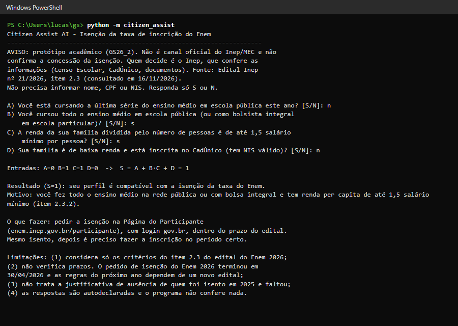
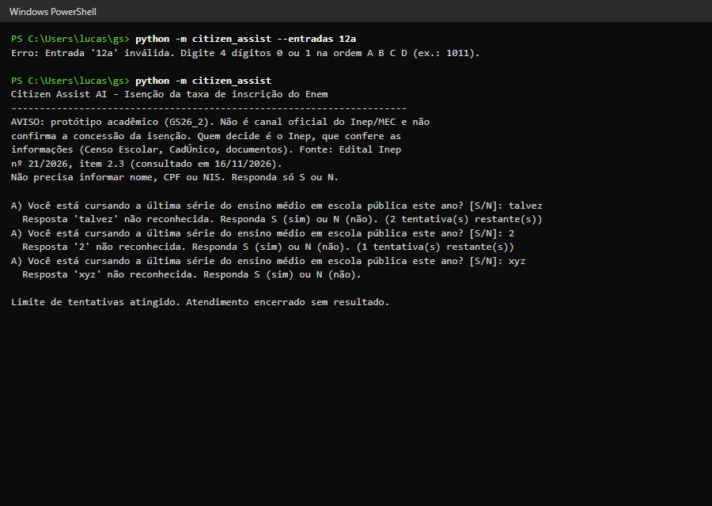
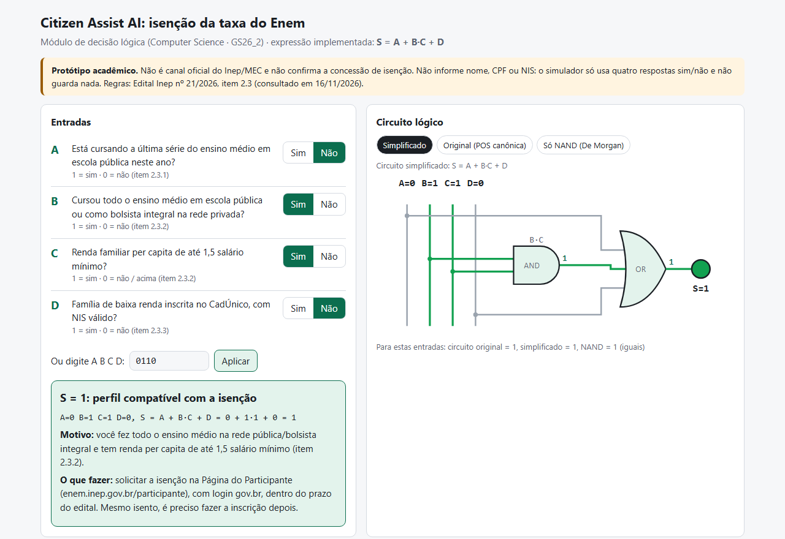
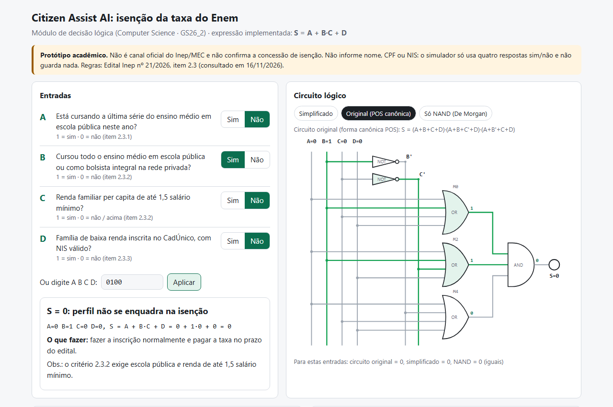
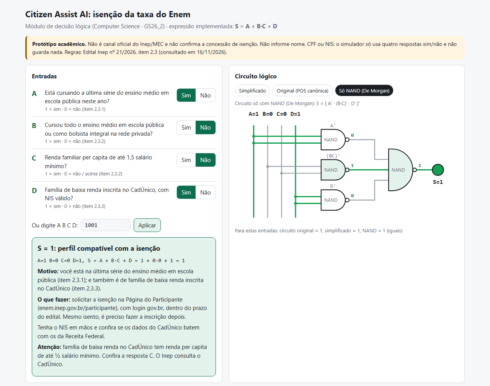
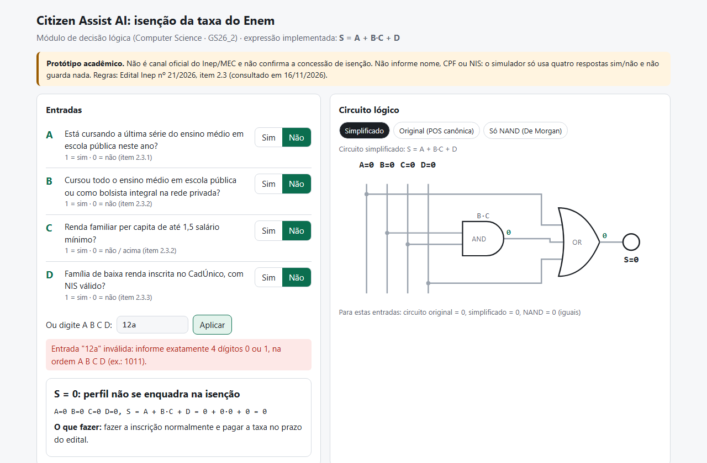
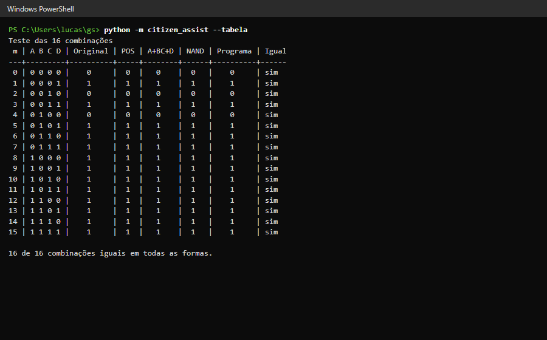
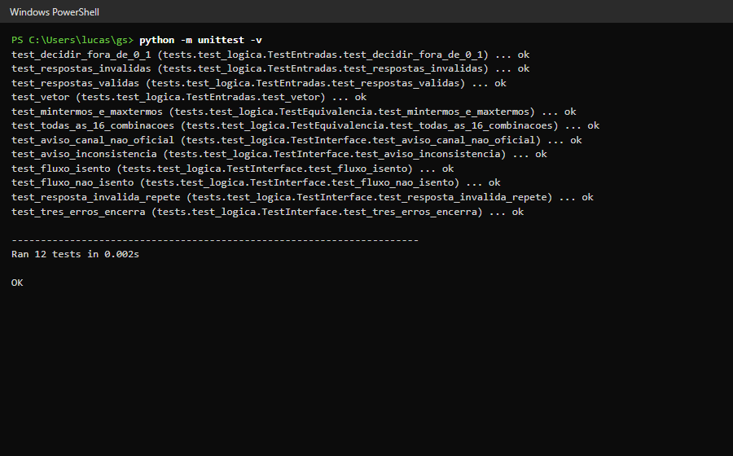
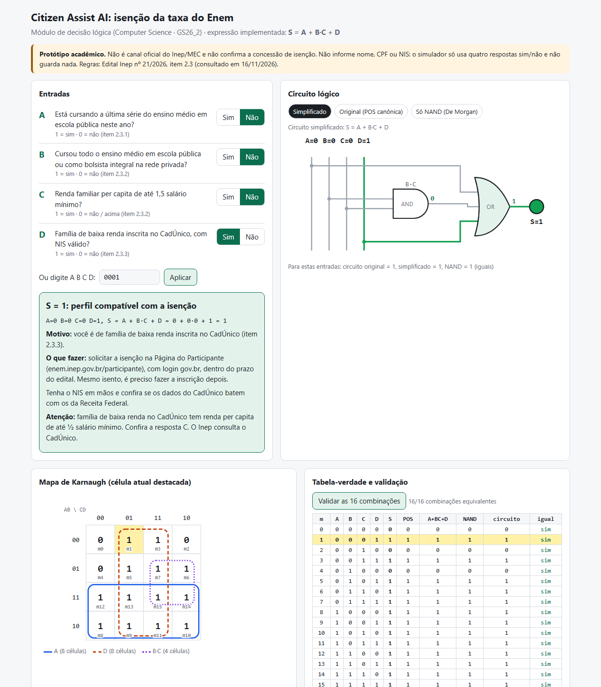

| Integrante | RM |
|---|---|
| Lucas Klein da Veiga | 570029 |
| Alexandre Rizzi de Mattos | 569621 |
| Miguel Putini | 571624 |
São Paulo, novembro de 2026
Muitos estudantes não sabem se têm direito à isenção da taxa do Enem. Alguns deixam de pedir e pagam sem precisar, outros pedem sem se encaixar em nenhum critério e têm o pedido reprovado. O Citizen Assist AI é um assistente de orientação ao cidadão, e a parte de Computer Science é o módulo que decide qual orientação dar: com quatro perguntas de sim ou não, ele indica se o perfil da pessoa bate com algum critério de isenção e qual é o próximo passo.
Escolhemos esse caso porque o próprio edital escreve a regra como uma lógica: a pessoa é isenta se atender a "ao menos um" dos requisitos (OU), e um desses requisitos exige duas condições ao mesmo tempo (E). Assim cada condição vira uma variável booleana e a regra vira uma função de quatro entradas.
O módulo pode ser testado separado do resto do assistente: a função decidir(a, b, c, d) recebe
quatro bits e devolve a saída S (ver seção 11).
A regra vem do item 2.3 do Edital Inep nº 21, de 25 de março de 2026 (DOU de 01/04/2026, Seção 3, p. 79), que trata da isenção da taxa do Enem 2026:
| Regra | O que usamos no modelo | Fonte (consultada em 16/11/2026) |
|---|---|---|
| R1 (2.3.1) | Quem está na última série do ensino médio em escola pública tem isenção. | Edital Inep nº 21/2026, item 2.3.1 |
| R2 (2.3.2) | Quem fez todo o ensino médio na rede pública (ou com bolsa integral) e tem renda per capita de até 1,5 salário mínimo tem isenção. | Edital, item 2.3.2; Lei nº 12.799/2013, art. 1º, parágrafo único |
| R3 (2.3.3) | Quem é de família de baixa renda (até ½ salário mínimo per capita) inscrita no CadÚnico, com NIS válido, tem isenção. | Edital, itens 2.3.3 e 2.3.3.1; Decreto nº 11.016/2022, art. 5º, II |
| R4 | Basta atender a um dos critérios. | Edital, item 2.3 ("ao menos um") |
| Contexto | O pedido é feito na Página do Participante com login gov.br. Ter a isenção aprovada não dispensa a inscrição. O prazo do Enem 2026 foi prorrogado até 30/04/2026. | Edital, itens 1.2, 1.6 e 2.1; Agência Gov (13/04/2026); MEC (prorrogação) |
| Var. | Pergunta feita ao cidadão | 1 | 0 |
|---|---|---|---|
| A | Está cursando a última série do ensino médio em escola pública este ano? | sim | não (outra série, escola particular ou já terminou) |
| B | Fez todo o ensino médio em escola pública ou como bolsista integral em escola particular? | sim | não (pelo menos uma parte em escola particular sem bolsa integral) |
| C | A renda familiar per capita é de até 1,5 salário mínimo? | sim | não (mais de 1,5 SM por pessoa) |
| D | A família é de baixa renda e está inscrita no CadÚnico, com NIS válido? | sim | não (não inscrita ou só com protocolo) |
| Saída | Valor | Orientação mostrada |
|---|---|---|
| S | S = 1 (compatível) | "Seu perfil é compatível com a isenção da taxa do Enem." Em seguida o programa diz qual critério foi atendido e orienta a pedir a isenção na Página do Participante (enem.inep.gov.br/participante), dentro do prazo, lembrando que a inscrição continua sendo necessária. |
| S = 0 (não compatível) | "Pelas respostas, seu perfil não se enquadra nos critérios de isenção do item 2.3 do edital." Orienta a fazer a inscrição e pagar a taxa. Se faltar só uma das condições do critério 2.3.2, mostra uma observação. |
Numeramos as linhas por m = 8A + 4B + 2C + D (A é o bit mais significativo). As 16 combinações podem acontecer, então não usamos don't care. A combinação D=1 e C=0 é estranha, porque família de baixa renda no CadÚnico tem renda de até ½ SM. Mesmo assim o critério 2.3.3 é conferido pelo Inep direto no CadÚnico, sem depender da renda que a pessoa declara. Por isso o modelo segue o edital (S=1) e o programa só mostra um aviso pedindo para a pessoa conferir a resposta C.
Aplicamos as regras R1 a R4 em cada uma das 16 combinações. As colunas do meio mostram qual critério foi atendido.
S = 1 em 13 linhas (m1, m3, m5, m6, m7 e m8 a m15) e S = 0 em 3 linhas (m0, m2 e m4).
Cada maxtermo só vale 0 na sua linha: M0 em 0000, M2 em 0010 e M4 em 0100. Como a função tem 13 uns e só 3 zeros, o produto de maxtermos fica bem menor (3 termos em vez de 13). Por isso usamos essa forma como ponto de partida da simplificação e como circuito original. As duas formas dão a mesma tabela, o que foi conferido nos testes.
Partindo do produto de maxtermos:
| # | Expressão | Propriedade |
|---|---|---|
| 0 | S = (A+B+C+D)(A+B+C'+D)(A+B'+C+D) | Forma canônica ΠM(0,2,4) |
| 1 | S = (A+B+C+D)(A+B+C'+D)·(A+B+C+D)(A+B'+C+D) | Idempotência: X = X·X (repetimos M0 para usar com M2 e com M4) |
| 2 | S = [(A+B+D)+C][(A+B+D)+C'] · [(A+C+D)+B][(A+C+D)+B'] | Comutativa e associativa |
| 3 | S = [(A+B+D) + C·C'] · [(A+C+D) + B·B'] | Distributiva: (X+Y)(X+Z) = X + Y·Z |
| 4 | S = [(A+B+D) + 0] · [(A+C+D) + 0] | Complemento: X·X' = 0 |
| 5 | S = (A+B+D) · (A+C+D) | Identidade: X + 0 = X (POS mínima) |
| 6 | S = [(A+D)+B] · [(A+D)+C] | Comutativa e associativa |
| 7 | S = (A+D) + B·C | Distributiva: (X+Y)(X+Z) = X + Y·Z, com X = A + D |
| 8 | S = A + B·C + D | Comutativa (SOP mínima) |
Resultado: S = A + B·C + D, com 3 termos e 4 literais. Isso é a própria regra do edital: critério 1, ou (escola pública e renda até 1,5 SM), ou critério 3. O passo 5, (A+B+D)(A+C+D), é a forma POS mínima.
Também conferimos pela soma de mintermos usando X·Y + X·Y' = X: os 8 mintermos com A = 1 (m8 a m15) viram A, os 8 com D = 1 (m1, m3, ..., m15) viram D, e m6, m7, m14 e m15 (B = C = 1) viram BC. Como X + X = X, um mintermo pode ser usado em mais de um grupo. O resultado é o mesmo: S = A + BC + D.
Teoremas: (X + Y)' = X'·Y' e (X·Y)' = X' + Y'. A simplificação da seção 6 não precisou deles. Usamos De Morgan em duas transformações, as duas conferidas nos testes.
| # | Expressão | Propriedade |
|---|---|---|
| 1 | S' = (A + B·C + D)' | Complemento da saída |
| 2 | S' = A' · (B·C)' · D' | De Morgan: (X + Y + Z)' = X'·Y'·Z' |
| 3 | S' = A' · (B' + C') · D' | De Morgan: (B·C)' = B' + C' |
Ou seja, a pessoa não tem isenção quando não está na última série da rede pública, não está no CadÚnico e falta pelo menos uma das condições do critério 2.3.2. Com A = D = 0, (B' + C') vale 1 para BC = 00, 01 e 10, que são as linhas m0, m4 e m2, justamente os três zeros da tabela. Isso confere com ΠM(0,2,4).
| # | Expressão | Propriedade |
|---|---|---|
| 1 | S = A + B·C + D | Forma simplificada |
| 2 | S = ((A + B·C + D)')' | Dupla negação: X = (X')' |
| 3 | S = (A' · (B·C)' · D')' | De Morgan na negação de dentro |
| 4 | S = NAND( NAND(A,A), NAND(B,C), NAND(D,D) ) | X' = NAND(X,X) e (X·Y·Z)' = NAND(X,Y,Z) |
Com essa forma dá para montar o circuito usando só um tipo de porta, por exemplo só com CIs 74HC00 e 74HC10. O circuito está na seção 9.
| Grupo | Células | Fixas | Termo |
|---|---|---|---|
| 1 (8 células) | m8 a m15 (linhas AB=11 e 10) | A = 1 | A |
| 2 (8 células) | m1, m3, m5, m7, m9, m11, m13, m15 (colunas CD=01 e 11) | D = 1 | D |
| 3 (4 células) | m6, m7, m14, m15 | B = 1, C = 1 | B·C |
Os três grupos são implicantes primos essenciais: só o grupo 1 cobre m8, m10 e m12, só o grupo 2 cobre m1, m3 e m5, e só o grupo 3 cobre m6. Juntos eles cobrem os 13 uns.
Agrupando os zeros: m0 e m2 (linha AB=00, colunas CD=00 e 10) dão (A+B+D), e m0 e m4 (coluna CD=00, linhas AB=00 e 01) dão (A+C+D):
| Método | SOP | POS | Observação |
|---|---|---|---|
| Álgebra booleana | A + B·C + D | (A+B+D)(A+C+D), passo 5 | 8 passos. A parte difícil foi perceber que M0 tinha que ser repetido. |
| Mapa de Karnaugh | A + B·C + D | (A+B+D)(A+C+D) | Mais rápido: 3 grupos de uns ou 2 grupos de zeros. |
Os dois métodos deram o mesmo resultado nas duas formas. O mapa também mostra que não existe expressão menor, porque cada grupo já é o maior possível e todos são essenciais.
Os circuitos foram desenhados pelo mesmo código do simulador (simulador/circuitos.js), com as
entradas A=0, B=1, C=1, D=0. Fio verde é nível 1, e o número ao lado de cada porta é a saída dela.
Usamos o mesmo critério para todos: cada porta conta 1, não importa quantas entradas tenha, e o NOT também conta como porta. Para comparar melhor, também convertemos cada porta de n entradas em n − 1 portas de 2 entradas e contamos o total de entradas de porta.
| Circuito | Portas | Total de portas | Em portas de 2 entradas | Entradas de porta |
|---|---|---|---|---|
| Soma de mintermos (só para referência) | 4 NOT + 13 AND(4) + 1 OR(13) | 18 | 4 + 39 + 12 = 55 | 4 + 52 + 13 = 69 |
| Original (ΠM(0,2,4)) | 2 NOT + 3 OR(4) + 1 AND(3) | 6 | 2 + 9 + 2 = 13 | 2 + 12 + 3 = 17 |
| Simplificado (A + B·C + D) | 1 AND(2) + 1 OR(3) | 2 | 1 + 2 = 3 | 2 + 3 = 5 |
| Só NAND | 3 NAND(2) + 1 NAND(3) | 4 | 3 + 3 = 6* | 6 + 3 = 9 |
O circuito simplificado usa 2 portas em vez de 6 (67% a menos) e 3 portas de 2 entradas em vez de 13 (77% a menos), sem nenhum inversor. * Uma NAND de 3 entradas vira 3 NANDs de 2 entradas: NAND(NOT(NAND(x,y)), z), com o NOT feito por uma NAND com as entradas ligadas.
| Arquivo | Conteúdo |
|---|---|
| citizen_assist/logica.py | A função em todas as formas: regra original (do jeito que está no edital), soma de mintermos, produto de maxtermos, forma simplificada e forma NAND. É a parte de Computer Science e pode ser testada sozinha. |
| citizen_assist/assistente.py | Programa de linha de comando: perguntas, tratamento de entradas inválidas, orientação, aviso e limitações. A decisão usa a forma simplificada. |
| tests/test_logica.py | 12 testes com unittest: as 16 combinações, entradas válidas e inválidas e o fluxo do atendimento. |
| simulador/index.html, circuitos.js | Simulador que abre no navegador: chaves A a D, circuito original, simplificado e NAND, mapa de Karnaugh e teste das 16 linhas. |
s, sim, 1, n, não, nao e 0, com letra maiúscula ou minúscula.--entradas e no simulador é preciso digitar exatamente 4 dígitos 0 ou 1. Fora disso aparece uma mensagem explicando o formato.decidir() recusa valores diferentes de 0 e 1.





Para as 16 combinações comparamos: a regra original do edital, o produto de maxtermos, a forma
simplificada, a forma NAND, o resultado do programa (decidir()) e os circuitos do simulador. A
tabela abaixo é calculada pelo código do simulador, e a Figura 11 mostra o mesmo teste rodando em Python.

python -m citizen_assist --tabela, 16 de 16 combinações iguais.
python -m unittest -v, 12 testes aprovados.
| Teste | O que verifica | Resultado |
|---|---|---|
| test_todas_as_16_combinacoes | Tabela escrita à mão = regra original = mintermos = maxtermos = simplificada = NAND = programa | OK |
| test_mintermos_e_maxtermos | Mintermos e maxtermos não se repetem e cobrem as 16 linhas | OK |
| test_respostas_validas / test_respostas_invalidas | Aceita s/sim/1/n/não/0; recusa "", "talvez", "2", "x" | OK |
| test_vetor | Aceita "1011" e "1, 0, 1, 1"; recusa "101", "10110", "1021", "abcd" | OK |
| test_decidir_fora_de_0_1 | decidir(2, 0, 0, 0) dá erro | OK |
| test_fluxo_isento / test_fluxo_nao_isento | Atendimento completo termina com S=1 ou S=0 e a mensagem certa | OK |
| test_resposta_invalida_repete | Resposta inválida mostra aviso e repete a pergunta | OK |
| test_tres_erros_encerra | Depois de 3 erros o atendimento termina | OK |
| test_aviso_inconsistencia / test_aviso_canal_nao_oficial | Os avisos aparecem | OK |
Precisa de Python 3.8 ou mais novo, sem instalar nenhuma biblioteca. Na pasta do projeto:
python -m citizen_assist python -m citizen_assist --entradas 0110 python -m citizen_assist --tabela python -m unittest -v
O primeiro comando faz as perguntas, o segundo recebe A B C D direto, o terceiro testa as 16 combinações e o último roda os testes.
Simulador: abrir simulador/index.html no navegador. Também dá para passar as entradas pela URL,
por exemplo index.html?e=0110&c=original (c pode ser original, simplificado ou nand).
Todas consultadas em 16/11/2026.